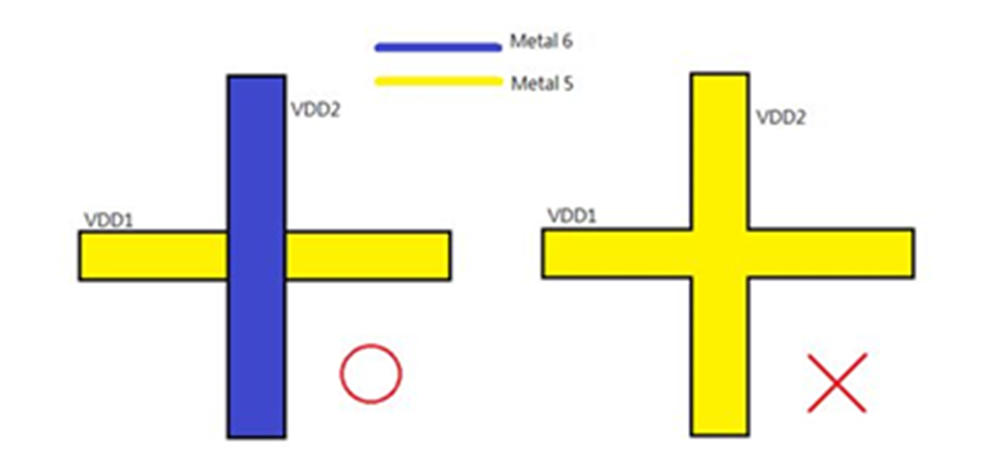

ICCAD 2016 Contest
Multiple Power Distribution Network Planning
Yung-Tai Chang, Yow-Tyng Nieh, Wei-Hung Lee, Industrial Technology Research Institute
I. Introduction
Routing is one of the most important tasks for physical design of VLSI circuits. In a complex integrated circuit, in addition to signal routing, we also need to consider power routing for mixed-signal hard IPs. However, the hard IPs may consume a lot of power that causes an excessive IR-drop on a power distribution network. Hence, designing of a power distribution network on a chip needs to ensure not only the routability but also circuit robustness. In this problem, the contestants have to design a power distribution network that uses the least amount of routing resources to meet the given IR-drop constraints and properly connect the power pins between power sources and hard IPs.
A power distribution network delivers current from power sources to all devices (including standard cells and hard IPs). In general, a power grid network is used to send current to standard cells. However, due to higher power consumption of hard IPs, in this contest problem we will directly connect power sources to the power pins of hard IPs to reduce voltage fluctuation.
Fig.1
An example for problem illustration.
We use a netlist and its initial floorplan in Figure 1 for illustration. Here, there are three hard IPs and three power sources that connect to four power pins of hard IPs. Power source VDD1 connects to power pin VDD_A of B1, power source VDD2 connects to power pin VDD_B of B1, and power source VDD3 connects to power pin VDD_A of B2 and power pin VDD_A of B3. Each power net can be constructed using horizontal wires and vertical metal wires. A metal via should be used when routing of a power net switches from one metal layer to another. Basically, use of upper metal layers is preferred due to their smaller resistance and capacitance.
A simple power routing result is shown in Figure 2. Both horizontal wires and vertical metal wires in each metal layer may be used for routing power nets. Note that, because B3 uses only Metal 1 to Metal 5 layers, wires on Metal 6 layer can be used for power routing. Basically, a hard IP employs only a certain number of metal layers for its internal routing. Hence, upper metal layers not used by hard IPs can also be used for routing over the underlying hard IPs.
Fig.2
The contestants have to not only produce a power routing, but also decide the wire width for the sake of reducing resistance or minimizing resource usage. A routing solution should meet the voltage drop constraints on all the power pins of hard IPs. The NGSPICE software is provided to calculate the voltage drops on the power pins.
II. Problem Description
The problem is given the following inputs:
- A Verilog netlist file of a design.
- A DEF (Design Exchange Format) file specifying an initial floorplan of the design.
- LEF (Library Exchange Format) files which contain technology rules and abstract information about the hard IPs.
- A file specifying the current drawn by each power pin.
- A file specifying the voltage of each power source.
- A file specifying IR-drop constraints.
- A file containing a weight for each metal layer.
A program must be developed to generate a DEF file that contains the actual layout of metal wires and metal vias. It must also generate some other information shown in Section 4. Figure 3 shows an output DEF file which describes a power routing solution to the problem given in Figure 1. Note that the dimensions of metal vias can be found in the given LEF file (tech.lef).
Fig.3
An output DEF file for a routing solution.
A LEF (tech.lef) file contains information about resistance per square of metal wires and metal vias. The resistance of a metal wire on layer N can be calculated by the following formula:
$R_{MetalN}=R_{PerSq} \times \frac{Metal Length}{Metal Width}$
For example, the total resistance of the power net from VDD2 to B1/VDD_B is calculated as follows:
$R_{VDD2\_B1\_VDD\_B}=R_{Metal5(horizotal)} + R_{via56} + R_{Metal6(Vertical)} + R_{Metal6(horizontal)}$
$ = 0.04 \times \frac {(108.7-0)}{10} +1 +0.02 \times \frac{(542.9-500)}{10} + 0.02 \times \frac{(1701-108.7)}{10}$
$ = 0.4348 + 1 + 0.0858 + 3.1846 = 4.7052 ohm$
Suppose the voltage of all power sources is 1.0V. According to the calculated resistances shown in Figure 4, the contestants need to create a SPICE netlist for IR-drop simulation using NGSPICE circuit simulator. Figure 5 shows the SPICE netlist for the circuits shown in Figure 4.
Fig.4
Circuit networks for a power routing solution.
Fig.5
SPICE netlist for the circuits in Figure 4.
We will also provide a binary executable NGSPICE for LINUX environment (as the attached file ngspice_26_linux.tgz) for IR drop simulation. The source code of NGSPICE can be downloaded from the website below.
http://sourceforge.net/projects/ngspice/files/ng-spice-rework/26/
We encourage the contestants to embed the source code into their programs.
III. Inputs
The inputs to the problems given in Figure 1 are detailed below.
- Verilog netlist
A Verilog netlist consists of a hierarchy of modules, connections between power sources and power pins of hard IPs. (As the attached file case1.v)
- DEF file
An initial DEF file gives the chip size and locations of power sources and hard IPs. (As the attached file case1_default.def)
- LEF files
There are two LEF files, tech.lef and blocks.lef, for this problem. The tech.lef gives the resistance per square on each metal layer, the range of wire width, and via size/resistance. The blocks.lef describes the shapes of hard IPs, power pin locations, and the blockages of hard IPs. (As the attached files tech.lef and blocks.lef)
- The current drawn by each power pin
# The current drawn by each power pin (mA)
B1 VDD_A 5
B1 VDD_B 2
B2 VDD_A 3
B3 VDD_A 2
- The voltage of each power source
# The voltage of each power source (V)
VDD1 1.0
VDD2 1.0
VDD3 1.0
- IR-drop constraints (in % of the related power source voltage)
# The IR-drop constraint of each power pin (%)
B1 VDD_A 2
B1 VDD_B 1
B2 VDD_A 3
B3 VDD_A 2
- The weights on metal layers
# The weights on metal layers
M1 2.49
M2 2.07
M3 1.73
M4 1.44
M5 1.20
M6 1
IV. Outputs
The output files for a solution to the problem in Figure 1 are as follows.
- DEF file
As the attached file case1_output.def.
- A metal usage report file
The contestants can calculate the metal usage of a routing solution as follows:
$Metal\ usage = \sum_{n=1}^{N} (Total\ Metal\ Area)_{Metaln} \times Weigh_{Metaln}$
Where N is the number of metal layers used for power routing of hard IPs.# The metal usage report
M5 11881
M6 56707
Total 70964.2
- SPICE netlist
As the attached file case1.sp which contains the circuit description for a routing solution.
- Voltage drop report
The contestants should employ the following commands to report the voltage at each node of a routing solution using NGSPICE software.
source case1.sp
run
quit
Figure 6 shows the voltage result after NGSPICE simulation.
Fig.6
A voltage report at each node.The final report that gives IR-drops is shown below (in % of the related power source voltage):
# The IR drop of each power pin (%)
B1/VDD_A 1.86
B1/VDD_B 0.94
B2/VDD_A 2.14
B3/VDD_A 1.19
V. Evaluation
ProblemE評分公式如下:
1. 無繳交執行檔, 或執行檔無法執行 = 0分
2. Power net routing 結果正確(不違反Physical guideline且output 正確DEF與minimum metal usage report) = 70+ 分
3. Power net routing 結果正確/具備IR-drop 分析功能(output 正確spice netlist與IR-drop report) => 80+ 分
4. Power net routing 結果正確/具備IR-drop 分析功能/符合IR-drop constraint => 90+ 分
5. 各階段再以(a)完成測試範例數量 (b)metal usage結果 (c)執行時間 進行最後評量
Requirements:
- All the output files are correct.
- Minimum metal usage.
- The voltage drop of each power pin cannot exceed its IR-drop constraint.
Physical guideline:
- Metal wires used for routing different power nets can not be shorted, as shown below.

- Minimum wire width of each metal layer is given in tech.lef. In practice, metal wire also has a maximum width constraint.
- Every two metal wires on a layer must follow the spacing rules in tech.lef
- Two hard IPs may abut (i.e. spacing is 0). The spacing rules between metal wires and hard IPs are the same as that given in guideline 3.
- The via size is defined in tech.lef. The contestants can insert more than one via in an enclosed area (see the figure below). Parallel resistance due to employing multiple vias should be considered.

- When the total metal area of a bent wire is calculated, the overlapped area at corners should not be counted repeatedly.
VI. Test Cases
Case1 and ngspice
Case2 and Case3
注意:這兩個Case額外定義了每一層metal layer最大的繞線寬度，
例如 tech.lef第17行 “MAXWIDTH 10 ;” 則代表 LAYER METAL1 最大的繞線寬度為 10 um，
請注意繞線結果不要違反此routing constraint。
VII. Alpha Test
Alpha Test 無參賽隊伍做出任何結果出來，連 CASE1 也沒有。Topic Chairs 鼓勵參賽同學把握剩下約兩個月時間持續努力，加油!
VIII. Beta Test
目前尚未有任何一組達到本題目所預期的目標，下列兩點事項請各位參賽者注意：
若參賽者的程式無法考慮IR Drop，請至少確保繞線結果符合題目中所述之physical guidelines。
XIV. FAQ
✩請各位參賽者在繳交程式執行檔時依照下列指令順序來執行:
Ex. Team1.exe case1.v case1_input.def tech.lef blocks.lef initial_files
- 在case1中的tech.lef檔案內，LAYER METAL6的方向僅有VERTICAL，是否代表LAYER METAL6只能在垂直方向做Routing呢？如果是的話，那題目網頁上的Figure2.繞線示意圖，是否只是提供參考呢?(圖中標示LAYER METAL6有兩種方向的線)
標準tech.lef格式中, 每一層metal layer都有Prefer routing direction，這是提供cad tool參考用的。實際上在同一層metal layer, 垂直水平都可以繞線;因此Figure2的繞線示意圖, 是實際被允許的真實範例. - 在case1中的blocks.lef檔案內，有提供block4, block5的資料。請問我們也要為這兩個blocks做Routing嗎？或者提供這兩個blocks的資訊另有特殊意涵？
block.lef是block的Library，而.v & .def是Design，Design中有使用到的block資訊，可以在相對應的block.lef中找到。但是Library中包含的資訊，不一定會被每個Design使用到，因此case1這個Design中的沒有使用到block4 & block5，就不需要對他們繞線，但這兩個block可能被其他的Design所使用。 -
在case2_input的46～74行中，placed跟fixed分別代表什麼意思?
在原始的def定義中, placed跟fixed是有差別的，但在這次的題目中, 這些hard block是不會移動位置的, 因此是沒有差別的，在這幾行，是要描述hard block的位置，以及其旋轉後的方向。 -
每個block都會占所有layer嗎？
不會，Block所佔的layer要參閱lef檔。 -
每個case都只有六個layer嗎還是會不一定？
不一定。 -
請問input的格式會長得像case2跟case3那樣嗎？像initial_file裡面都會用#來註解以下的內容是IR drop或者weight on metal，還是不一定會有註解，是用順序跟空行來判斷？
你是指initial_files這個檔案嗎? 若是的話，我們會保持initial_files註解內容與其順序，可以用欄位數目或#號來當判斷條件，但注意空行不能成為判斷條件。 -
請問input的LEF/DEF檔等的內容，可以假設格式會如同給的測資(case1/2/3)來進行parse嗎？就是我們需要考慮的資訊都有包含在提供的測資裡嗎？還是希望我們使用given的parser呢？因為不太知道自己寫parser的話需要考慮到多少。
所有測試範例LEF/DEF檔的格式與內容，就如同case1/case2/case3 中給定的內容一樣，不會再有新定義的資訊格式或語法。 -
在 Case1 的 tech.lef 中，
LAYER METAL
WIDTH 1 ;
SPACING 1 ;
PITCH 1 ;
其中，PITCH是否與WIDTH 與SPACING有衝突？因我們參照Case2與3中，PITCH為2，所以有此疑問
Case1的tech.lef有誤，我們已更新成case2 & case3內的tech.lef -
想請問一下caseX.v還有initial_file的檔案，其他測資會比case3的還大嗎？因為我是用getline讀檔案，有些部分是讀取一整行再取值，如果其中有一行字很多的話parser會壞掉，請問可以告訴我最多大概會多少嗎？
如果你是指在case3.v中, input的power訊號很多的問題，我們無法事先保證會有多少power訊號，若要因此限制一行的總字元數是多少是不明智的，檔案格式若沒限制一行有幾個字，我們就不會多加限制。 -
我們想請問 是否有提供有關DEF、LEF的parser? 謝謝。
網路上可以搜尋到一些lef/def的parser,例如以下網站:http://projects.si2.org/openeda.si2.org/projects/lefdefnew/學術單位可以去申請下載.由於前三個測試範例檔的LEF 內容是相同的, 如果真的對於撰寫LEF parser有問題,可以在程式裡直接使用LEF內的數值來做計算而得出結果,但在報告中請註明缺LEF parser,在測試的時候, 我們會改動lef中的數值, 寫成定值的結果也許不會太好,且隱藏的測試檔案, 也會有新的lef檔案, 很可能會造成你們的程式無法執行.而三個測試範例的DEF皆不相同, 而且程式輸出也須要寫出 DEF 格式,故DEF parser 的撰寫是必須的. -
題目E的測資中，tech.lef給的都是 "WIDTH widthnum"，但題目中physical guideline 2有提到minimum wire width of each metal layer is given in tech.lef，WIDTH應該不是minimum wire width吧。想請問一下直接指定WIDTH而非MINWIDTH~MAXWIDTH是只發生在前三個case的情形嗎?
Tech lef中，WIDTH是指min width，MAXWIDTH是指max width，MANUFACTURINGGRID可以視為最小單位。For example:
MANUFACTURINGGRID 0.1 ;
WIDTH 1 ;
MAXWIDTH 10 ;
表示metal width是從1:0.1:10, (1→1.1→1.2→1.3→1.4→…→…→9.8→9.9→10) -
我們發現在case2、case3的blocks.lef有關描述OBS金屬層的地方，有些只有敘述metal 1 3 3 4 5 6，但照例說應該是metal 1 2 3 4 5 6，想請問這部分該怎麼處理？
case2 、 case3的blocks.lef 中有關描述OBS金屬層的地方有誤，我們已在官網上更新，請更新新的blocks.lef。 -
Case1和case2給的def檔案內，PINS statement後面給的pin number與實際數目對不起來，請問會做修改嗎?
Case1、case2新的case1_input.def 與 case2_input.def中, 有關PINS 敘述後面給的pin number有誤，我們已在官網上更新，請更新新的case1_input.def , case2_input.def -
任兩相鄰金屬層的via 似乎會有多種選擇，可是線寬可以以0.1為單位改動，請問當我要打via切換金屬層時，是否需要注意線寬是否與via的尺寸符合?
請參考題目中Physical guideline 第五點與圖示有完整說明：
5. The via size is defined in tech.lef. The contestants can insert more than one via in an enclosed area (see the figure below). Parallel resistance due to employing multiple vias should be considered. -
test case內提供的ngspice檔在linux下無法執行，請問該如何使用?
我們試過是可以執行的，請問導致不可執行的error message 為何?
須注意傳上執行檔後，還需chmod 755 ./ngspice 改變檔案屬性才可執行
./ngspice
ngspice> source case1.sp
ngspice> run
ngspice> quit
如何執行Ngspice, 載列網址中有詳細說明
http://ngspice.sourceforge.net/docs/ngspice26-manual.pdf
-
請問每個caseX_input.def 是否都會給 GCELL GRID 和 TRACKS資訊？像是case1_input.def就沒有給相關資訊。
在完整的def格式中, 是會有該資訊的, 但在本次的題目中, 參賽者可以忽略def中 TRACKS以及GCELLGRID的資訊不處理, 對結果並不會有影響. -
(1)測資裡面有給各個pin的電流以及限制的 IR-Drop，也有給power source的電壓，因為如果一條線有分叉，可能會有分流的效應，是否可以提供一個範例教導參賽者如何計算電壓降?
(2)請問 CPU time是否會列入評分標準?
(3)請問從power source到一個pin之間經的繞線是否可以改變線寬
(1)請使用ngspice來協助計算.
(2)會的.
(3)可以的, 請依據評分標準, 妥善規劃繞線的寬度.
-
(1)在caes2的case2_input.def中block5的第一個是不是會超出範圍，因為block5在block.def中的定義蠻大的，好像會超過耶。還有也想請問在case2_input.def裡的component，- B1_01 block1 + FIXED ( 2290000 1313300 ) N ，最後面那個英文字母是代表著什麼意思?像是FW、E、N之類的都看不太懂。
(2)還有case3中的case3.v的block8那邊是不是編碼有問題?數字好像有點太多
最後那個英文字母代表他翻轉後的方向,因此你說的block5的第一個, 經過翻轉後是不會超出範圍的,
旋轉說明: http://www.ispd.cc/contests/14/web/doc/lefdefref.pdf , page 186
兩個testcase的FloorPlan, 應如下所示:
Case2
Case3

(2)長度沒有問題, 就當一個字串抓 -
請問在case1的範例中，電阻的計算是否有錯誤?R_Metal6中的vertical與horizontal似乎重複計算到corner的面積
另外，因為範例只介紹case1，但case2,3比case1複雜許多，沒圖文說明可能造成誤解def/lef的定義，請問是否能提供case2,3一些case1沒介紹到的資訊呢?
是的，原先的做法重複計算了corner的面積。現在我們改為取corner的中心點來計算，這樣算出來的面積就不會重複計算corner的面積。
Update後, tech lef應該要是同一個檔案, 隱藏case不會再有更多資訊了
LEF相關解釋的文件: http://www.csee.umbc.edu/~cpatel2/links/641/slides/lect04_LEF.pdf
Lef def相關的文件也可以參考: http://www.ispd.cc/contests/14/web/doc/lefdefref.pdf
兩個case的floorplan如下所示:
Case2

Case3

-
1. 請問 tech.lef 檔案中 VIA 連接的 LAYER 的 RECT 除了 cut layer 都一定會一樣嗎？e.g. via 連接 LAYER METAL5 和 METAL6，那 LAYER METAL5 跟 LAYER METAL6 的 RECT 是否會一樣？
2. 請問只有 case2、3 def 檔才有的 TRACKS 及 GCELLGRID 是什麼？為什麼 case1 沒有？
3. 請問 def 檔中的
PROPERTYDEFINITIONS
COMPONENTPIN designRuleWidth REAL ;
DESIGN FE_CORE_BOX_LL_X REAL 0.000 ;
DESIGN FE_CORE_BOX_UR_X REAL 3000.000 ;
DESIGN FE_CORE_BOX_LL_Y REAL 0.000 ;
DESIGN FE_CORE_BOX_UR_Y REAL 3000.000 ;
END PROPERTYDEFINITIONS
是否可以忽略？DIEAREA 就足夠表示？
4. 請問 blocks.lef 中 Macro 的 SYMMETRY 是否可以忽略？另外， 一個 MACRO 本身在每個 LAYER 佔的大小是否一定相同？
1. 同一顆VIA, 相鄰兩層的RECT會一樣, 請注意VIA是SIZE大小的分別.
2. 在完整的def格式中, 是會有該資訊的, 但在本次的題目中, 參賽者可以忽略def中 TRACKS以及GCELLGRID的資訊不處理, 對結果並不會有影響.
3. 同上題, 在完整的def格式中, 是會有該資訊的, 但在本次的題目中, 參賽者可以忽略def中PROPERTYDEFINITIONS的資訊不處理, 對結果並不會有影響.
4. 在本次題目中, SYMMETRY表示每個macro可翻轉的方向, 請注意在design def中, macro被翻轉後的方向, 旋轉說明: http://www.ispd.cc/contests/14/web/doc/lefdefref.pdf , page 186, 另外在本次題目中, 一個macro並不一定會佔據所有的layer層, 請依據block.lef中OBS這部分的內容. -
Q1: caseX_input.def PINS 裡面 pin 的描述中，有提到 "+ PORT", 請問是什麼意思？
Q2: case1_input.def 中 VDD1 有 port 描述, 其餘都沒有；case3_input.def 中 VDD_111a 的port的描述有兩個，以上case1 和 case3 port的描述分別是什麼意思？
以上兩個問題一起回答
PINS裡面會描述input power source的形狀,位置,以及所在的metal層數,
1. 若同一種power只有一個power source, 那麼PORT這個屬性可加也可不加, 例如case1中的VDD1 & VDD2.
2. 若同一種power只有兩個以上的power source, 那麼PORT就可以將不同的power source區分開, 例如case3中的VDD_111a & VDD_111b, 分別有兩個不同的power source.
3. USE POWER & USE SIGNAL是給EDA TOOL分別屬性的, 對本次題目的結果不影響. -
(1)請問關於metal usage report中的M5和M6相加不等於Total的值，是否計算有誤?
(2)請問關於output_files中The IR drop of each power pin 的計算是否需要include ngspice的程式自動產生?
(3)請問在題目提供計算電阻R的算式中，在轉角處並沒有減去重複計算的電阻部分，是否正確?
(1) 請注意 Metal usage的定義還要乘上權重(題目中有說明, Input files第7點)
$Metal usage = 56707*1 + 11881*1.2 = 70964.2$
(2) 是的, 因為存在電流的分流效應, 使用ngspice來計算有其必要性, 請參考Q&A 問題17的回答
(3) 原先版本的題目有誤, Figure 4 ，Figure 5，Figure 6，電阻R的算式以及case1.sp都已更新, 請參考Q&A 問題19的回答
-
在輸出def檔案的時候，若一個source連到多個pin，造成同一條線段被印出多次，此種結果可否被接受?
如果在output def檔案中，同一個source的描述下，重複寫出同樣的線段是不會有問題的，但同一個output def檔案中不會有同樣線段的描述，依據這個特性，應該很容易將重複的線段濾掉。如果參賽同學有時間的話，還是建議寫出單一沒重複線段的output def。 -
請問大會幫我們執行Beta Test時，把執行結果附加在信件中的電路圖，是使用何種軟體跑出來的?
目前是使用Cadence的EDI, 任何實體設計軟體都可以做到相同功能。 -
請問power繞線到block pin時，只需要接到pin的任何一個位置就可以了嗎?還是要接到整個pin的底部?
你只須連到blocks.lef 中定義的任何一層metal layer的出pin位置即可，但整條power net寬度必須完整被power pin包覆住，例如 power pin 寬度為10，以座標表示為[0,10]，則power net寬度必定小於等於10 (假設為5)，你可以接到 [2,7] [0,5] [5,10]，但[-1,4] [8,13]則不被允許，如果考慮IR-drop 效應，由於power pin定義的每一層metal layer出pin位置都可以被連接，所以越多條power net連接到不同metal layer的power pin，由於並聯效應關係，可望有較低的電阻值，因此IR-drop effect也較輕微。 -
Ngspice的結果是自己測試還是需要繳交?
題目中第4章有定義Output files，第三點，你必須輸出Spice netlist才能使用NGSPICE進行IR-drop分析，而第四點 Voltage drop report，以case1為例 你必須output 每一power pin的IR-drop。
如以下所示:
# The IR drop of each power pin (%)
B1/VDD_A 1.86
B1/VDD_B 0.94
B2/VDD_A 2.14
B3/VDD_A 1.19
-
若需繳交Ngspice的結果，請問該如何使用一行command line來執行ngspice所需輸入的指令?
請將case*.sp 朗案內容後面加上下列描述 (如附檔case1.sp)
.control
set noaskquit
run
quit
.enddc
在linux執行下列指令即可產生出IR-drop 結果
> ngspice case1.sp -o case1_IR.log
-
請問輸出的檔名是否有規定? (例如 caseX 要輸出caseX.def caseX.sp)
請比照case1 範例命名
case1_output.def case1.sp output_files
-
IR-drop constraint這一項，是需要所有的pin點都符合才能得分，還是會部分給予分數 (e.g. 少數幾個沒過)?
會依比例給部分分數。 -
若同一種power有兩個以上的power source, 例如case3中的VDD_111a & VDD_111b, 需同時連接到block pin還是其中一個連到block pin就好?
題目中定義同一種Power有兩個以上的Power source的原因在於，其中某一個Block power pin 的Current drawn有可能非常大，若你只將其中一個Power source 連到Block power pin，那將可能無法符合此Block power pin的IR-drop constraint。只使用一個Power source來連到 Block power pin在Power routing上是合法的，但我們鼓勵參賽者能將多個Power source 以並聯的方式連到Block power pin，以達到IR-drop constraint要求。 -
想請問對於DRC Rule 連接 Via 的問題 想請問對於附圖左邊的狀況，兩層layer都包含住via的規定範圍，想請問這樣的狀況是符合DRC rule的嗎? 還是只能像是右邊的圖必須將兩邊相互符合？
左右圖的情況都可以符合DRC rule -
關於wire包覆via的問題。如附圖，黑框是via大小，水平wire跟垂直wire在不同layer。請問這樣是legal的嗎?
以一顆size 10*10的via5_C為範例，請將10*10都包在上下兩層metal layer內。若你問題圖中的黑框是10*10，則是legal的，若黑框的大小是6*6, 左下角那缺角等於2*2, 也是legal的。
-
若在power source的地方線段沒有完全包覆source，是否為正確的結果? 檢測DRC和connectivity皆沒有問題產生。
OK，這樣的結果算是正確的!